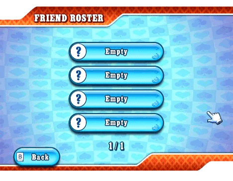
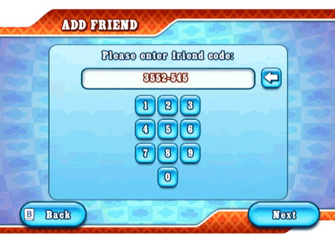

23 |
Friends |
 |
You can obtain your Friend Code by entering the ‘Create Game’ menu. You can share it with your friends via phone or email or internet. Friend Roster  The Friend Roster has two purposes: to keep track of your Friends and their status and to join a game that they are hosting or already playing. Once you establish a friendship in the game, you will be able to follow your Friends and join their games in both Worldwide and Friend games, as long as there are available seats at the table. In order to become Friends with someone, both you and your Friend will need to register each other’s Friend Codes from the ‘Add Friend’ menu. Before both sides have done so, you will not be able to see your future Friend’s online status and nickname, but Friend Code only. Status Types Your Friend is in a game and you can join him/her. Just select his/her slot in the Friend Roster.
Your Friend is online and is not currently playing a game. Your Friend is online, playing a game, but you cannot join his/her game. If no smiley is displayed, your Friend is offline.
Select this to erase a Friend from your list. Add Friend  This is where you register Friend Codes. Your Friend needs to do the same on his/her Wii console and then you will be ready to play! |


 |
 |
 |